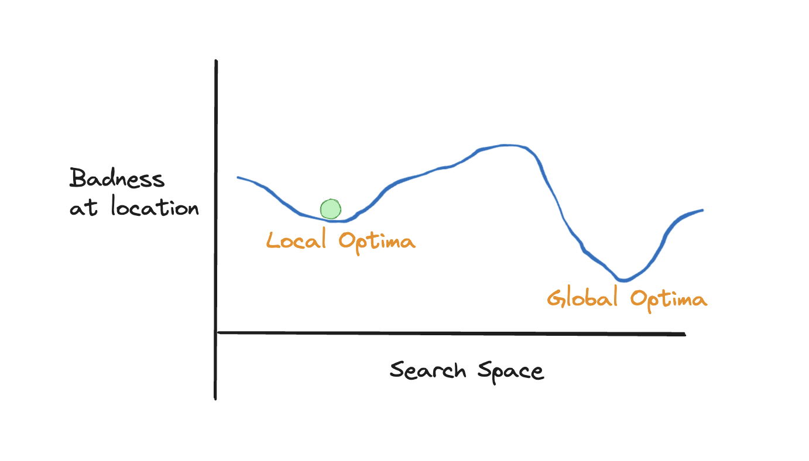

I was speaking with someone recently who started a new job a few months ago, after an unexpected redundancy from a job they were both good at and found engaging and meaningful.
Despite many surface similarities between the previous job and the current one, after over half a year it’s become clear the new job does not have those same qualities that brought a sense of purpose, engagement and meaning that the previous job brought. The work environment, the organisational culture, and various other aspects of the new job are all subtly but substantially different in a way that provides, overall, a much less engaging and purposive experience of work. And from this a yearning to stop has been growing, and to look for opportunities and experiences that are altogether different: to pursue travelling, music and other artistic avenues of expression, and so on, but without necessarily a clear plan for how to make a sustainable livelihood of this. To perhaps seek not to find something more similar to the old job that brought so much purpose, but something altogether different.
I found myself unironically using the term Anti-Victories in this conversation, a term taken from the game Cultist Simulator, which I wrote about previously. This of course led to a brief detour into the game itself, and the surprisingly deep and complex ways it attempts to simulate key aspects of human purpose and motivation. Despite its otherworldly theme, Cultist Simulator really does seem to speak to genuine aspects of the various needs that people have, and the complexity of trying to balance such needs in a sustainable way.
Another term that speaks to the kind of predicament sketched out above is Velvet Mousetrap, a term offered to me by someone I spoke to a few years ago when discussing my own job situation, regarding the role I left around a month ago.
A more bloodless and technical term for the same underlying concept is local optima, the concept taken from the mechanics of statistical inference that I’ve perhaps found most philosophically meaningful and insightful, and appears a useful concept across a great many domains of life.
To understand what’s meant by a local optima it’s first necessary to imagine something called a fitness landscape. This is a continuous space of possibilities over which a function of that space, called its fitness, also continuously varies.
If this continuous space of possibilities is imagined as a single dimension, x, then the fitness landscape may look as follows:

In this image, the fitness function \(f(x)\) of the search space (\(x\)) is the vertical axis, and labelled ‘amount of badness’. Basically, the idea is to find the position along the search space with the least amount of badness, meaning the value of x that corresponds to the lowest value of y.
In the image, there’s also what we can call an agent, represented by the small ball.
The figure shows that the fitness landscape is nonlinear: more x doesn’t always lead to better y, or vice versa. The landscape also shows two troughs, positions of x for which any small change in the value of x will lead to increases rather than decreases in y.
Currently the agent (the ball) is in one of these two troughs. As we are seeking to find the least amount of badness, each trough is referred to as an optima. (If we were seeking to maximise something, the optima would be the highest peaks, rather than the deepest troughs.)
In the figure, the two optima are labelled: the more shallow of the two troughs, where the agent currently resides, is called the local optima, whereas to the right of it we see a deeper trough, which is labelled the global optima.
To my mind, the concepts of both the Anti-victory and Velvet Mousetrap are very similar: a realisation of being in a local optima. The Anti-victory, however, seems more fatalistic: a sense of resignation and deep about this realisation. What I’m doing now: it’s fine. It’s not great, but it’s not terrible either; it could definitely be worse. So let’s stick with what I know. I’m okay with that… I really am.
From the agent’s perspective (and all too often, we are the agents), there can be two fundamental challenges in reaching the global optima:
We cannot see the entire landscape;
Even if we can see a preferable optima to the one we are closest to, we might not have the energy to reach it.
There’s a simpler term for this: settling. (A related psychological concept: satisficing. Though this relates more to transient decisions, such as which brand of toothpaste to buy, rather than more permanent states.) There are advantages and disadvantages to being and becoming settled.
If we take our little green agent in the figure, we can see the dilemma: almost all of the journey from the local optima, where the agent currently resides, to global optima, where they might hope to be, is worse (has more badness) than where they are now. Additionally, for much of this journey they will be working against, rather than with, gravity. If they cannot sustain the ascent to and beyond the worst point in the path from local to global, they will just roll back to where they started.
To my mind, that’s why people settle.